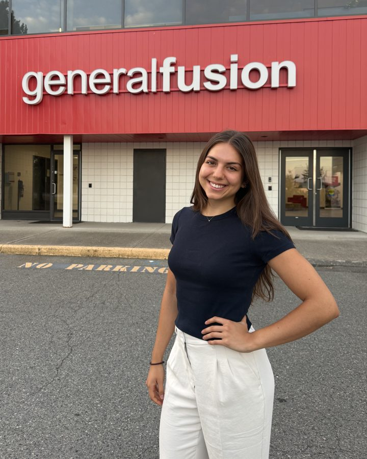
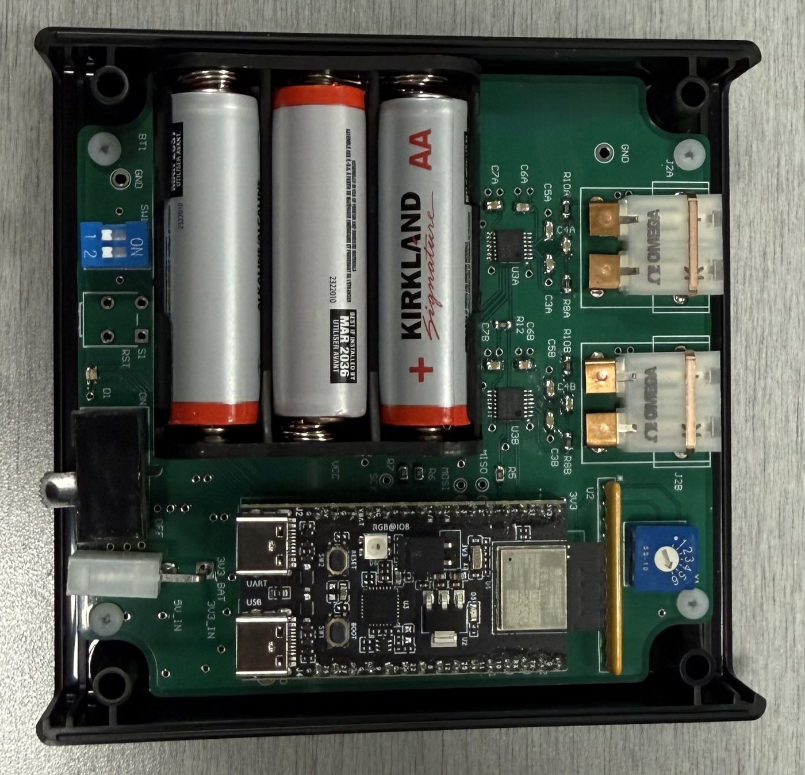
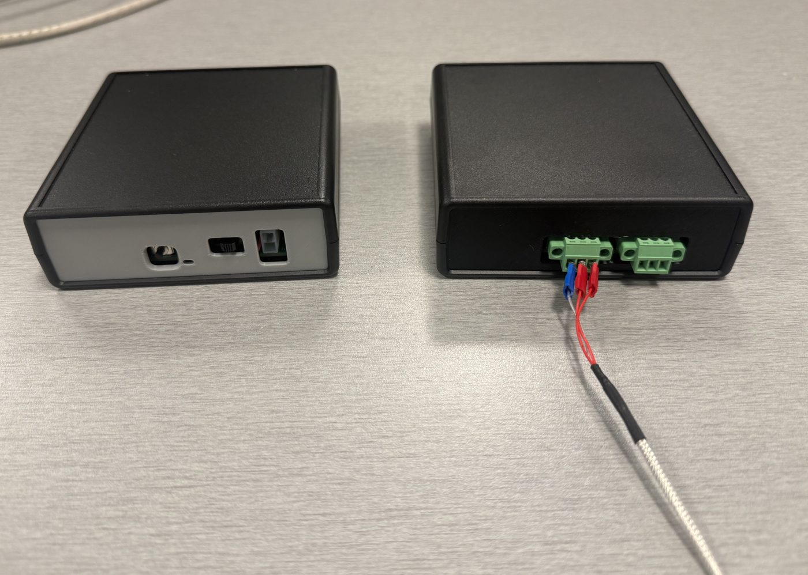
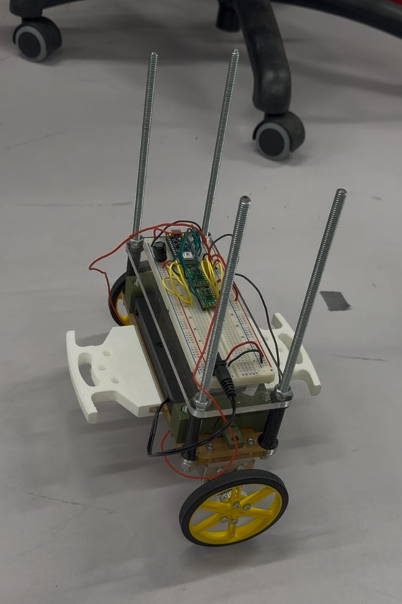
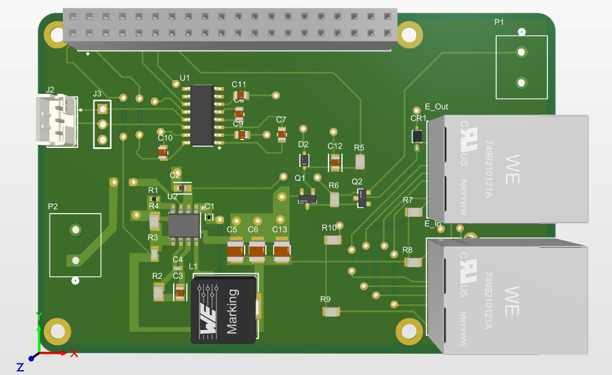
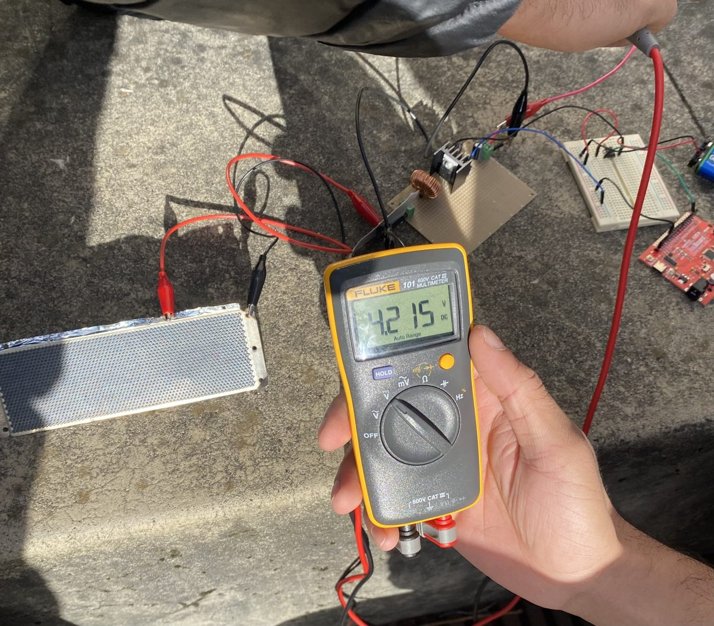
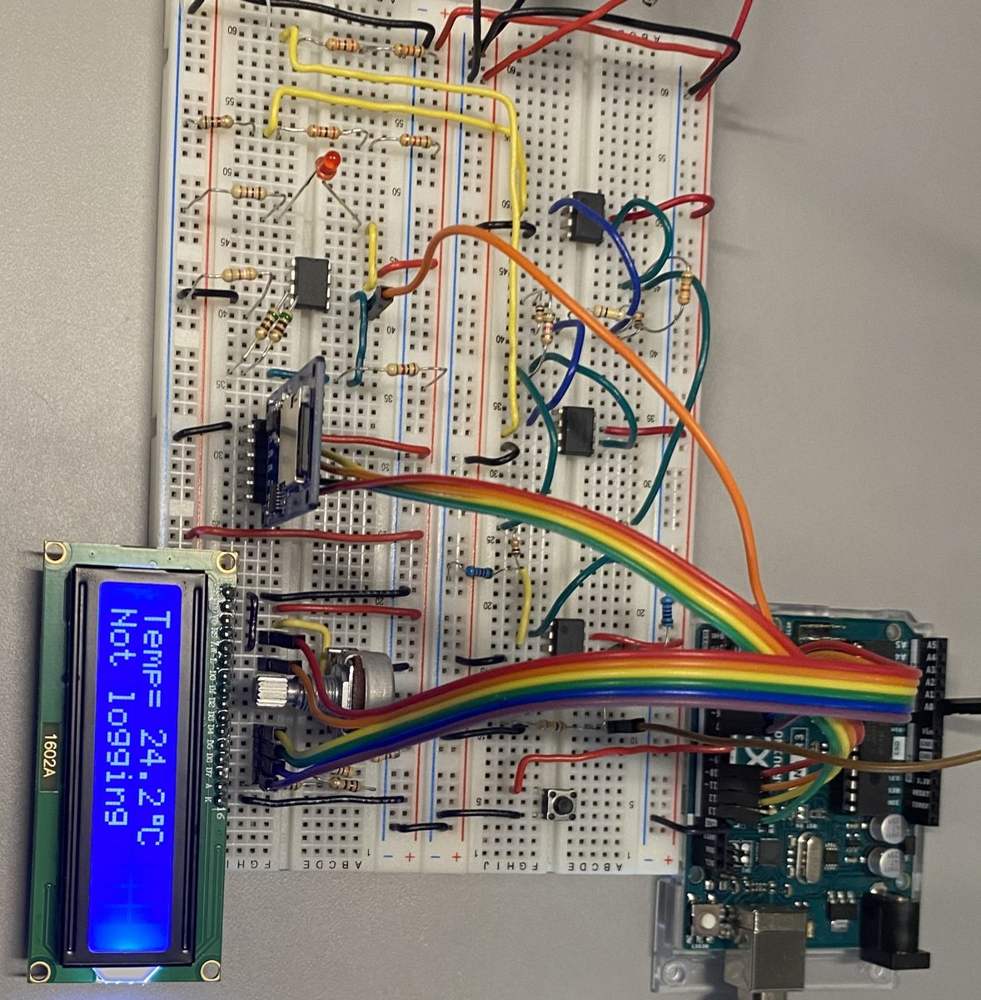

Electrical Engineering Student at UBC looking for new-grad hardware roles

I'm in my final year of Electrical Engineering at the University of British Columbia, and I currently split my time between school and a part-time contract as an Electrical Designer at General Fusion, where I'm designing a custom Arduino Portenta breakout board to replace a 64-channel legacy system.
During my 8-month co-op there, I took a battery-powered wireless sensor from a blank schematic to a working deployment: I designed the PCB, wrote the low-power firmware, set up the network it reports to, and later helped investigate a suspected EMI failure on a separate board. I like problems that sit at the boundary of hardware and firmware, and I'm looking for full-time hardware and embedded roles starting after I graduate in May 2027.


General Fusion's environmental sensors ran on WiFi and lasted only a few days on a full battery, which is too short for practical deployment in a facility running periodic plasma shots. The goal was a battery-powered replacement that lasts weeks without giving up sampling rate or reliability.
I designed the sensor PCB in Altium across three revisions:
I wrote the low-power Zigbee end-device firmware in C using ESP-IDF, with sleep-mode power management that brought average current draw under 1 mA. I also configured and troubleshot the Zigbee2MQTT coordinator network the devices report to.
Four nodes ran deployed at the same time, each reporting every 30 seconds for about three weeks on battery. I took part in the design review for the board and later presented the project to the entire company, over 100 people.
A fielded optical-trigger board, used to fire LED triggers for the fusion system on a nanosecond-scale timing budget, started failing intermittently after plasma shots. Some units recovered with a power cycle; others needed the IC replaced. The root cause hadn't been confirmed, but EMI was the leading suspect given the environment.
I was asked to help investigate and harden the design in parallel:
The protection revision was built and validated on the bench, and the EMI test rig is in place to keep gathering data. The investigation was still ongoing at the end of my co-op. I also took part in the design review for this board.

Built on an Arduino Nano 33 BLE Sense with a BMI270 IMU, a Kalman filter for tilt estimation, and a PID loop for motor control. Wrote the firmware for Bluetooth control and PID tuning; it holds balance and drives on slopes up to 15°.

Designed a Raspberry Pi HAT in Altium with PoE power delivery, a buck converter and RS-232 satellite modem communication for an autonomous sailboat's mainframe, verified with an oscilloscope and logic analyzer.

Worked with students from the Fukuoka Institute of Technology to design a DC-DC boost converter that charges a 400 F supercapacitor from a 0.45 V solar cell, applying MPPT concepts for energy harvesting.

Designed a temperature-controlled LED and motor circuit using 555 timers for PWM generation. Debugged timing and signal integrity with an oscilloscope and multimeter.
Work history, skills, and education on one page.